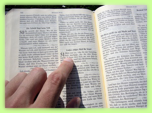

Bibelkreis für junge Erwachsene
Hausbibelkreis
Im Bibelkreis für junge Erwachsene treffen wir uns ein Mal monatlich, lesen gemeinsam eine Bibelstelle und erörtern diese anschließend. Es ist unser Bestreben uns dabei weiterzuentwickeln und auch Kraft und Trost aus der Bibel zu schöpfen. Zurzeit sind wir meistens 4-6 Leute und freuen uns auch immer über neue Besucher.
Die genauen Daten unserer Treffen findest du unter „ Termine“.
Agnes und Immanuel

Im Hausbibelkreis der Thomaskirche, treffen sich einige Gemeindemitglieder zum gemeinsamen Bibelstudium. Das Treffen findet immer bei einem der Hausbibelkreismitglieder statt. Wie beginnen mit einem gemeinsamen Abendessen, singen christliche Lieder und erarbeiten gemeinsam Bibelstellen.